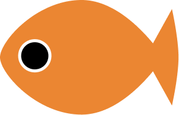

모리아쿠아 구경하기
모리아쿠아는 특정 취미층을 대상으로 한 전문 수족관이 아닌, 10대의 첫 물생활 경험부터 공공 공간의 대형 수조 관람에 이르기까지 연령과 경험 수준에 관계없이 누구나 접근할 수 있는 온·오프라인 통합형 수조관 브랜드를 지향한다. 구매를 전제로 한 소비 중심의 공간이 아니라, 물고기를 만나고 관찰하며 배우는 경험을 중심으로 구성하여 물생활과 수족관 문화에 대한 진입 장벽을 낮추는 것을 본 브랜드의 주요 목표로 합니다.
모리아쿠아는 특정 취미층을 대상으로 한 전문 수족관이 아닌, 10대의 첫 물생활 경험부터 공공 공간의 대형 수조 관람에 이르기까지 연령과 경험 수준에 관계없이 누구나 접근할 수 있는 온·오프라인 통합형 수조관 브랜드를 지향한다. 구매를 전제로 한 소비 중심의 공간이 아니라, 물고기를 만나고 관찰하며 배우는 경험을 중심으로 구성하여 물생활과 수족관 문화에 대한 진입 장벽을 낮추는 것을 본 브랜드의 주요 목표로 합니다.

가장 대중적인 관상어로, 성격이 온순하고 기르기 쉽습니다. 다양한 색상과 형태를 가집니다.
등지느러미가 없고 둥근 몸매를 가진 금붕어입니다. '금붕어의 왕'이라고 불립니다.
머리에 발달한 혹(육혹)이 특징이며, 화려한 지느러미를 가지고 있어 인기가 많습니다.
가장 원형에 가까운 금붕어로, 붕어와 비슷하지만 꼬리지느러미가 갈라져 있습니다. 튼튼하고 기르기 쉽습니다.
미국에서 개량된 품종으로, 꼬리지느러미가 혜성(Comet)처럼 길게 뻗어 있는 것이 특징입니다. 날렵하고 빠릅니다.
등 뒤가 높게 솟아오른 체형과 긴 지느러미가 우아한 금붕어입니다. 류킨이라고도 불립니다.
야생에서 흔히 볼 수 있는 붕어로, 금붕어의 조상입니다. 환경 적응력이 매우 뛰어납니다.
꼬리지느러미가 반전되어 화려하게 펼쳐지는 것이 특징인 고급 금붕어입니다. 위에서 볼 때 가장 아름답습니다.
둥근 몸통에 긴 꼬리지느러미를 가진 금붕어로, 내한성이 강하고 헤엄을 잘 칩니다.